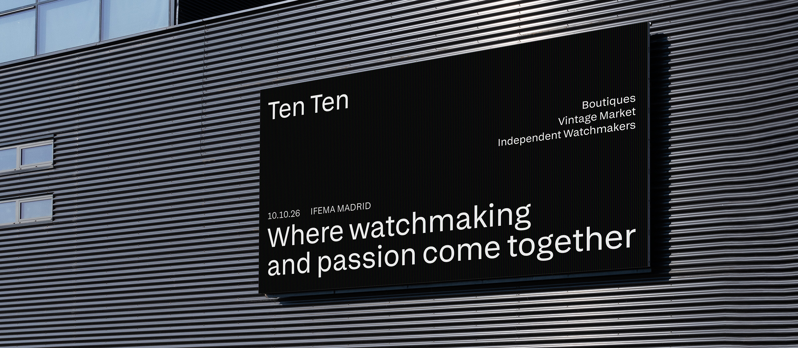
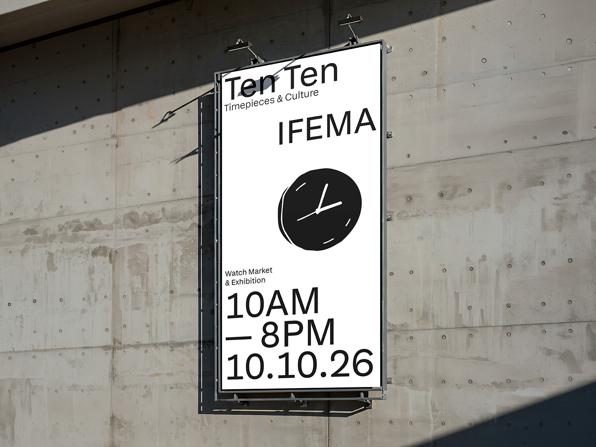
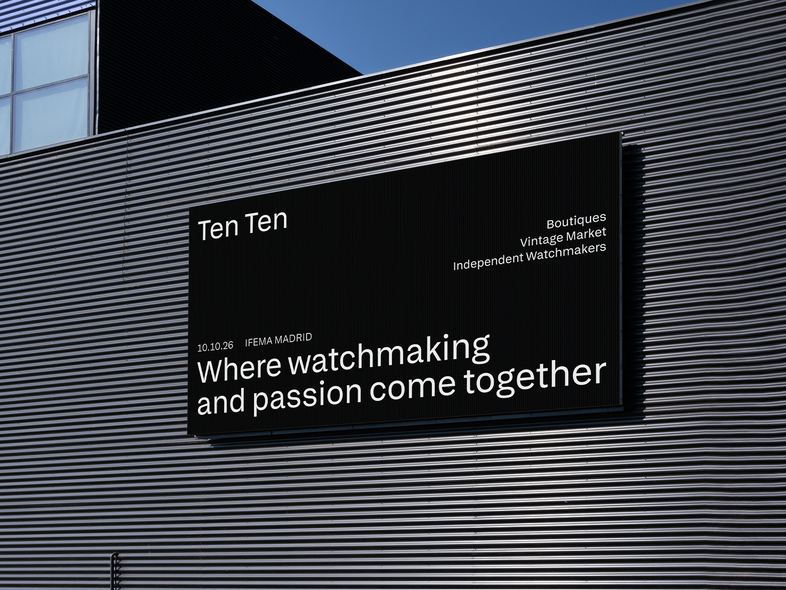
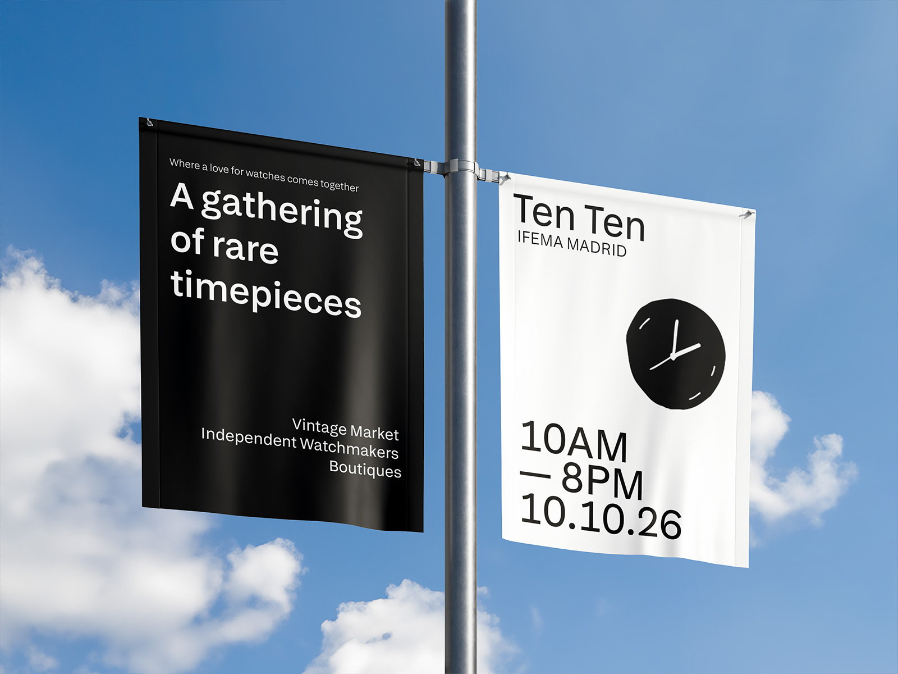
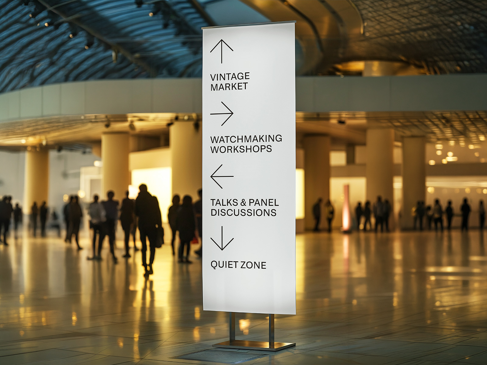
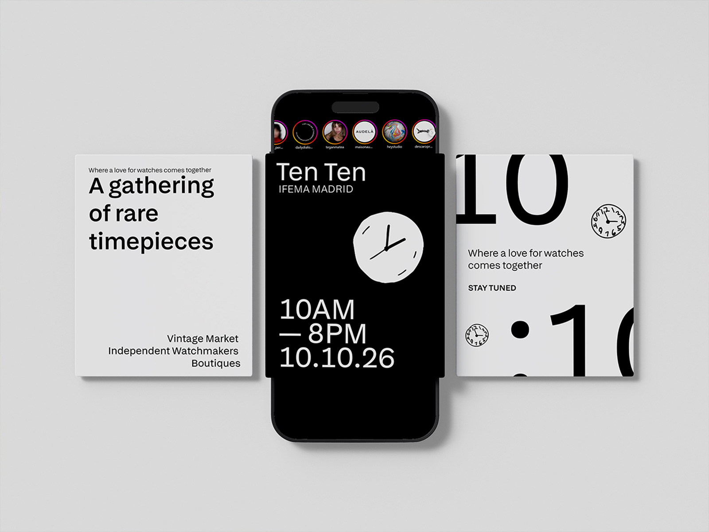

Proyectos / TenTen
Diseñé una feria sobre cultura relojera pensada para un público joven, algo que prácticamente no existe en España, la idea era salir del estatus que se considera a la relojería.

Para plantearlo, me inspiré en el modelo de Scrapworld y en cómo consiguieron construir un formato potente en IFEMA que rompiera con las ferias comerciales de siempre. La idea con TEN TEN es sacar los relojes de ese entorno tan cerrado y elitista para llevarlos a un contexto más urbano y accesible.
El propósito final es que TEN TEN se convierta en esa cita anual obligatoria donde se valide la cultura del reloj en todas sus formas, transformando una simple feria comercial en una experiencia de comunidad.




